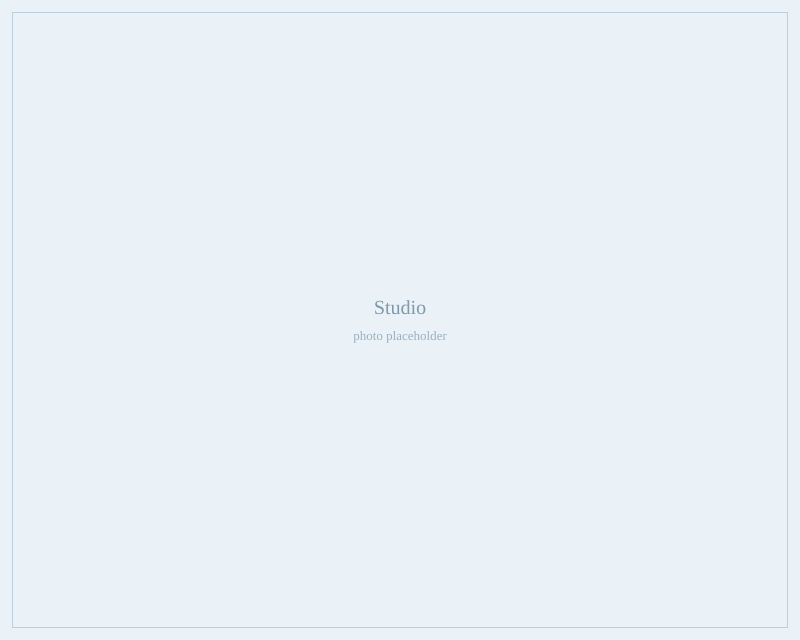

Figure Skating & Gymnastics Costumes
Competition costumes made to measure, and made to move.
Artfitwear is a small studio making custom dresses and leotards for figure skaters and gymnasts. Every costume is drafted to the athlete's own measurements, sewn in-house and stoned by hand.
About the studio
A competition costume has a harder job than most clothing. It has to survive a spiral, a back walkover and a fall on the ice, keep its shape through a full season of training, and still look right from the far end of the arena.
That comes down to construction: four-way stretch fabrics chosen for the discipline, seams sewn to stretch with the body instead of fighting it, linings and leg elastic that stay put, and crystals set so they stay on.
Costumes are made one at a time, in conversation with the athlete and the coach. Bring a music cut, a color, or a picture torn out of a program — the design is worked out from there.

What we make
Built for the discipline, not adapted from a pattern book.
Figure skating dresses
Competition and test dresses with attached briefs, illusion mesh sleeves and necklines, and skirts cut to fly the way you want them to.
Gymnastics leotards
Artistic and rhythmic leotards, with or without sleeves and skirts, in velvet, mystique and matte lycra — fitted so nothing needs adjusting mid-routine.
Crystal work
Hand-set rhinestones, from a light scatter to full coverage, applied to a plan that reads under arena lighting. Existing costumes can be re-stoned too.
Alterations & resizing
Growth adjustments, hand-me-downs taken in or let out, and dresses reworked between seasons so a favourite costume gets another year.
Repairs
Replaced crystals, split seams, tired leg elastic, torn mesh and broken fastenings — turned around quickly when there's a competition coming.
Team & club orders
Matching sets for synchro teams, group routines and club competition wear. Ask early — team runs are booked well ahead of the season.
How it works
- Get in touch Tell us the discipline, the level, the competition date and any colors or ideas you already have.
- Design & measurements We settle the design, fabric and stone coverage together. Measurements are taken at the studio, or sent in using our measuring guide.
- Quote & deposit You get a firm price and a completion date before any fabric is cut.
- Fitting & finish The costume is fitted before the crystals go on, then finished and delivered — with a small bag of spare stones and the matching glue.
Pricing
Price depends on the design, the fabrics and — more than anything — how many crystals go on it. A clean practice dress and a fully stoned competition dress are very different jobs, so there is no flat price list.
Quotes are free. Alterations and repairs can usually be priced from a photo and a short description.
Out-of-town athletes are welcome: measurements can be sent in and finished costumes shipped.